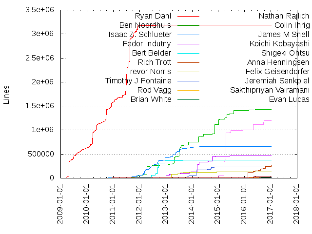
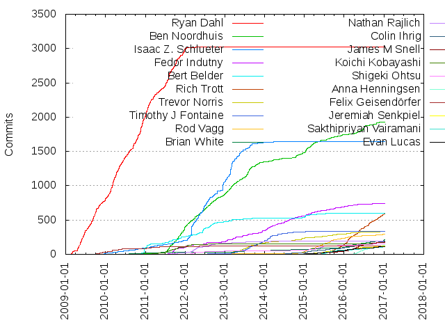

Authors
| Author | Commits (%) | + lines | - lines | First commit | Last commit | Age | Active days | # by commits |
|---|
| Ryan Dahl | 3021 (18.91%) | 3183479 | 1541937 | 2009-02-16 | 2012-08-23 | 1283 days, 19:16:45 | 718 | 1 |
| Ben Noordhuis | 1930 (12.08%) | 1433281 | 811826 | 2010-05-13 | 2016-12-12 | 2404 days, 19:52:48 | 835 | 2 |
| Isaac Z. Schlueter | 1647 (10.31%) | 659085 | 453663 | 2009-09-30 | 2015-01-16 | 1934 days, 0:59:40 | 496 | 3 |
| Fedor Indutny | 744 (4.66%) | 467436 | 311260 | 2010-08-12 | 2016-12-09 | 2311 days, 4:04:25 | 427 | 4 |
| Bert Belder | 597 (3.74%) | 373614 | 79238 | 2010-08-05 | 2015-06-18 | 1777 days, 17:44:20 | 202 | 5 |
| Rich Trott | 592 (3.71%) | 261625 | 236668 | 2015-05-17 | 2017-01-03 | 597 days, 3:54:27 | 312 | 6 |
| Trevor Norris | 333 (2.08%) | 135076 | 85095 | 2012-11-10 | 2016-12-22 | 1503 days, 1:02:52 | 199 | 7 |
| Timothy J Fontaine | 332 (2.08%) | 238193 | 90419 | 2012-07-10 | 2015-01-16 | 920 days, 7:13:46 | 125 | 8 |
| Rod Vagg | 290 (1.82%) | 16368 | 12593 | 2012-03-14 | 2016-12-21 | 1743 days, 10:56:40 | 155 | 9 |
| Brian White | 209 (1.31%) | 16676 | 7670 | 2010-05-24 | 2017-01-03 | 2416 days, 0:32:50 | 154 | 10 |
| Nathan Rajlich | 197 (1.23%) | 4129 | 1341 | 2010-10-13 | 2015-10-07 | 1819 days, 10:39:14 | 112 | 11 |
| Colin Ihrig | 190 (1.19%) | 15712 | 12462 | 2014-05-09 | 2017-01-03 | 969 days, 15:14:52 | 132 | 12 |
| James M Snell | 179 (1.12%) | 44416 | 34794 | 2014-12-20 | 2017-01-04 | 746 days, 12:21:39 | 104 | 13 |
| Koichi Kobayashi | 157 (0.98%) | 6356 | 1737 | 2011-02-05 | 2013-08-04 | 910 days, 19:32:22 | 106 | 14 |
| Shigeki Ohtsu | 153 (0.96%) | 1201787 | 540681 | 2011-07-15 | 2016-09-26 | 1900 days, 8:08:22 | 90 | 15 |
| Anna Henningsen | 130 (0.81%) | 5014 | 1141 | 2015-12-20 | 2017-01-06 | 382 days, 6:33:57 | 88 | 16 |
| Felix Geisendörfer | 124 (0.78%) | 6892 | 2834 | 2009-09-23 | 2014-05-13 | 1693 days, 16:55:52 | 78 | 17 |
| Jeremiah Senkpiel | 118 (0.74%) | 5303 | 2558 | 2015-01-24 | 2016-12-07 | 682 days, 21:27:26 | 86 | 18 |
| Sakthipriyan Vairamani | 113 (0.71%) | 3310 | 2330 | 2015-05-06 | 2017-01-05 | 610 days, 0:08:46 | 77 | 19 |
| Evan Lucas | 109 (0.68%) | 5685 | 3066 | 2014-12-03 | 2017-01-03 | 762 days, 3:15:09 | 92 | 20 |
These didn't make it to the top: Michaël Zasso, Igor Zinkovsky, Sam Roberts, Andreas Madsen, Ali Ijaz Sheikh, Johan Bergström, Alexis Campailla, Myles Borins, Santiago Gimeno, Roman Reiss, Maciej Małecki, Yazhong Liu, Jackson Tian, Vladimir Kurchatkin, Micheil Smith, Julien Gilli, Michael Dawson, Chris Dickinson, Tristian Flanagan, Herbert Vojčík, Brendan Ashworth, Eugene Ostroukhov, Tom Hughes, Saúl Ibarra Corretgé, Daniel Bevenius, Steven R. Loomis, João Reis, Сковорода Никита Андреевич, Mikeal Rogers, Adrian Estrada, Vse Mozhet Byt, Yosuke Furukawa, Stefan Budeanu, Kat Marchán, Karl Skomski, Forrest L Norvell, Bryan English, Tim Caswell, Paul Querna, Jérémy Lal, Henry Rawas, Peter Griess, Kyle Robinson Young, Josh Gavant, Matt Ranney, Prince J Wesley, Mathias Bynens, Dave Pacheco, Alex Kocharin, Matt Loring, Luigi Pinca, Claudio Rodriguez, Benjamin Gruenbaum, Rasmus Andersson, Nikolai Vavilov, Alexander Makarenko, Scott Blomquist, Ryan Graham, Italo A. Casas, Wyatt Preul, Trent Mick, Ryunosuke SATO, Rhys Jones, Rebecca Turner, TJ Holowaychuk, Robert Jefe Lindstaedt, Peter Bright, Gibson Fahnestock, Calvin Metcalf, Urban Hafner, Minwoo Jung, Dean McNamee, Timothy Gu, Jonas Pfenniger, Franziska Hinkelmann, Domenic Denicola, Bartosz Sosnowski, Miroslav Bajtoš, Matteo Collina, Julian Duque, Zachary Scott, Sambasiva Suda, Roman Klauke, Joyee Cheung, Jeroen Janssen, Oleg Efimov, Jorge Chamorro Bieling, Yoshihiro KIKUCHI, Yang Guo, Ryan Emery, Robert Mustacchi, Robert Kowalski, Refael Ackermann, Phillip Johnsen, Lance Ball, Jonas Westerlund, Daniel Wang, Benjamin Thomas, Adri Van Houdt, Tom Gallacher, Tim Smart, Theo Schlossnagle, San-Tai Hsu, Petka Antonov, Nathan Woltman, Marco Rogers, Marcel Laverdet, Gil Pedersen, Felix Böhm, Christian Tellnes, Bryan Cantrill, Bradley Meck, Andrei Sedoi, Adam Langley, Thomas Shinnick, P.S.V.R, Krishna Rajendran, Junliang Yan, Johan Euphrosine, Jan Schär, Ilkka Myller, Cheng Zhao, AJ ONeal, maasencioh, joyeecheung, William Kapke, Trevor Burnham, Tim Oxley, Teddy Katz, Stéphan Kochen, Ron Korving, Raymond Feng, Nikhil Marathe, Junshu Okamoto, Jonathan Darling, Imran Iqbal, Glen Keane, Brandon Benvie, Aaron Heckmann, Łukasz Walukiewicz, larissayvette, Yuval Brik, Thorsten Lorenz, Sam Shull, Roman Shtylman, Richard Lau, Owen Smith, Ojas Shirekar, Michaeljohn Clement, Michael Starzinger, Mark Nottingham, Mark Cavage, Kári Tristan Helgason, Jason Gerfen, Gireesh Punathil, Feross Aboukhadijeh, Dmitry Baranovskiy, David Trejo, Dan VerWeire, Colton Baker, Charlie McConnell, Aria Stewart, AnnaMag, Alejandro Oviedo, Adam Malcontenti-Wilson, vsemozhetbyt, solebox, not-an-aardvark, davidmarkclements, Zoran Tomicic, Tobie Langel, T.C. Hollingsworth, Stewart Addison, Stefan Rusu, Scott McWhirter, Safia Abdalla, Russell Haering, Robert Chiras, Richard Karmazin, Pavol Otcenas, Pavel Lang, Paddy Byers, Oguz Bastemur, Miguel Angel Asencio Hurtado, Mathias Buus, Malte-Thorben Bruns, Kyle E. Mitchell, Kirill Fomichev, Kevin Donahue, Kenan Sulayman, Julian Gruber, Joe Shaw, Jesse McCarthy, Jeremy Martin, Jenna Vuong, Ingvar Stepanyan, Ingmar Runge, Friedemann Altrock, Erik Dubbelboer, Eric Lovett, Devon Rifkin, Dave, Carl Lei, Artur Adib, Arnout Kazemier, Arlo Breault, Andrew Paprocki, Andres Suarez, Andras, Ali Farhadi, Alexis Sellier, Alexander Gromnitsky, Alex Yursha, Alex Xu, surya panikkal, ronkorving, jessicaquynh, imatvieiev, fengmk2, dcposch@dcpos.ch, anoff, Zach Bjornson, Wes Tyler, Vyacheslav Egorov, Travis Swicegood, Thom Seddon, Steve Sharp, Steve Mao, Stephen Gallagher, Stanislav Opichal, Shannen Saez, Sequoia McDowell, Scott González, Sami Samhuri, Ryuichi Okumura, Ryan Lewis, Rod Machen, Rob Adelmann, Reid Burke, Ray Morgan, Peter Lyons, Omer Wazir, Oleg Slobodskoi, Oleg Elifantiev, Nick Raienko, Mithun Patel, Mike Ralphson, Mike Kaufman, Micleusanu Nicu, Michael Cornacchia, Mark Stosberg, Kevin Locke, Joshaven Potter, Josh Erickson, Joseph Pecoraro, Jonathan Rentzsch, Jonathan Persson, Jonathan Ong, Johnny Reading, Jeremy Whitlock, Jan Krems, Jan Kassens, James Hartig, Jakob Kummerow, Jake Verbaten, Giovanny Andres Gongora Granada, Frederic Hemberger, Farid Neshat, Evan Larkin, EungJun Yi, Ethan Arrowood, Erik Lundin, Duy Le, Dominic Tarr, Dirceu Pereira Tiegs, David Sklar, David Siegel, Daniel Gröber, Daniel Ennis, Dan Kaplun, Daijiro Wachi, Christopher Monsanto, Christopher J. Brody, Chris Bystrek, Chinedu Francis Nwafili, Chandra Sekar S, Brandon Beacher, BethGriggs, Benjamin Waters, Benjamin Kramer, Artem Zaytsev, Alfred Cepeda, Aleksey Smolenchuk, Aleksei Koziatinskii, Adrian Nitu, Aaron Bieber, 子丶言, zoubin, sivaprasanna, scott stern, scalkpdev, marzelin, makenova, lrlna, k3kathy, iamchenxin, hirabhullar, hefangshi, firedfox, brad-decker, ben_cripps, adelmann, Zirak, Zheng Chaoping, Zeke Sikelianos, Yuichiro MASUI, Yoshiya Hinosawa, Yevgen Safronov, Xidorn Quan, Xavier Shay, Xavi Magrinyà, Wojciech Wnętrzak, Willi Eggeling, Walter Beller-Morales, Wade Simmons, Vladimir Varankin, Vincent Voyer, Victor Felder, Vicente Jimenez Aguilar, Travis Bretton, Tracy Hinds, Toon Verwaest, Tony Metzidis, Tony Huang, Todd Kennedy, Tim Kuijsten, Tim Bradshaw, Thomas Reggi, Thomas Lee, Tarjei Husøy, Tanuja-Sawant, Tadashi SAWADA, Stefano Vozza, Stanislav Ochotnicky, Siddharth Mahendraker, Seth Fitzsimmons, Segu Riluvan, Sean Villars, Sarah Meyer, Sadique Ali, Ryan Sobol, Ryan Scheel, Ryan Doenges, Rui Marinho, Rudi Cilibrasi, Richard Sun, Ray Donnelly, Rasmus Christian Pedersen, Rafael Henrique Moreira, Rafael Garcia, Rafael Cepeda, Prayag Verma, Phillip Kovalev, Philip Tellis, Peter Rust, Pedro Victor, Paulo Matias, Paul Grock, Paul Graham, Pat Pannuto, Outsider, Oscar Martinez, Oliver Salzburg, Niklas Ingholt, Nigel Kibodeaux, Niclas Hoyer, Nick Stenning, Nick Apperson, Nao Iizuka, Mudit Ameta, Minqi Pan, Mikael Bourges-Sevenier, Mihai Călin Bazon, Michael Wilber, Michael Macherey, Michael Hart, Michael Carter, Max Ogden, Maurice Butler, Matt Webb, Matt Phillips, Matt Harrison, Matt Crummey, Martin von Gagern, Mariano Iglesias, Marcin Cieślak, Malcolm Ahoy, Lydia Kats, Luis Reis, Lorenz Leutgeb, Logan Smyth, Linus Unnebäck, Laurent Fortin, Lalit Kapoor, Kris Kowal, Konstantin Likhter, Konstantin Käfer, Kohei TAKATA, Kevin Zurawel, Kevin Bowman, Karl Guertin, Jörn Horstmann, JungMinu, Juanjo, Joshua S. Weinstein, Joshua Holbrook, Josh Mays, Josh Gummersall, Josh Dague, Jonathan Prince, Jonathan Knezek, Jonathan Johnson, John Eversole, Johannes Wüller, Johan Dahlberg, Jimmy Hsu, Jimb Esser, Jesús Leganés Combarro "piranna, Jered Schmidt, Jeff Harris, Jeff Barczewski, Jay Brownlee, Jason Ginchereau, Jan Lehnardt, James Halliday, Jacob H.C. Kragh, J. Lee Coltrane, Ionică Bizău, Igor Klopov, Hitesh Kanwathirtha, Henry Chin, Harish Tejwani, Haoliang Gao, HUANG Wei, Guy Fraser, Guilherme de Souza, Guilherme Souza, Greg Valdez, Greg Sabia Tucker, Greg Hughes, George Stagas, George Shank, Gareth Ellis, Gabriel Wicke, Francois Marier, Francis Gulotta, Farrin Reid, Fabrice Tatieze, Evan Torrie, Evan Martin, Eugene Obrezkov, Eugene Girshov, Emanuel Buholzer, Elliott Cable, Elijah Insua, Ehsan Akhgari, E. Azer Koçulu, Diosney Sarmiento, Devin Nakamura, DavidCai, David Björklund, Dave Olszewski, Dav Glass, Daryl Thayil, Dany Shaanan, Danny Guo, Daniel Turing, Daniel Sims, Daniel Pittman, Daniel Moore, Daniel G. Taylor, Daniel Clifford, Daniel Chatfield, Dan Williams, Dan Fabulich, CodeVana, Christopher Rokita, Christopher Jeffrey, Charmander, Cesar Hernandez, Carlos Campderrós, Bryon Leung, Bradley T. Hughes, Blake Mizerany, Benoit Vallée, Benjamin Ruston, Ben Williamson, Ben Taber, Ben Ripkens, Ben Kelly, Anton Khlynovskiy, Anne-Gaelle Colom, Andrew Low, Andreas Lind, Anders Conbere, Amar Zavery, Alexey Kupershtokh, Alexandre Marangone, Alexander Uvarov, Alex Hultman, Aileen, Abe Fettig, Aaron Jacobs, Коренберг Марк, Ömer Fadıl Usta, weyj4, vazina robertson, ttrfwork, toastynerd, timathon, teppeis, sxa555, svenpanne@chromium.org, suryagh, sudodoki, stokingerl, ss22ever, shiya, sartrey, sarahmeyer, saadq, rgoodwin, rajatk, rainabba, pkcs, piepmatz, pallxk, oogz, nohmapp, nettofarah, mpmckenna8, monkick, mkamakura, misterpoe, michael6, mfrance, matzavinos, matt-in-a-hat, masashi.g, mark hughes, malen, levsoroka, lazlojuly, kohta ito, kobelb, kimown, kibertoad, kalrover, justshiv, jun-oka, julien.waechter, jseagull, jona, jomo, jochen@chromium.org, jigsaw, jedireza, janriemer, jBarz, ikasumi_wt, iamdoron, hveldstra, hugnosis, haoxin, hackerjs, h7lin, gyson, goussardg, gluxon, ghaiklor, fmizzell, fen, eudaimos, epertoso, doug.wade, delvedor, dead-horse, dcarney@chromium.org, coderaiser, cdnadmin, brian m. carlson, blugavere, bjdelro, ayanamist, axvm, atstojanov, atrioom, anu0012, amrios, akki, abouthiroppy, Zwb, Zarko Stankovic, Zach Bruggeman, YutamaKotaro, Yuriy Nemtsov, Yuki KAN, Yuan Chuan, Yosuke Saito, Yosef Dinerstein, Yoji SHIDARA, Yojan Shrestha, Yann Pringault, Yangyang Liu, Xotic750, Xiaowei Li, Wolfgang Steiner, William Luo, William Bert, Wietse Venema, Wayne Andrews, Wang Xinyong, Wallace Zhang, Vsevolod Strukchinsky, Vladimir de Turckheim, Vladimir Guguiev, Vladimir Beloborodov, Vitor Cortez, Vitor Balocco, Vitaly Tomilov, Vitali Lovich, Vincent Weevers, Vincent Ollivier, Victor Widell, Victor Costan, Veres Lajos, Vaibhav, Uttam Pawar, Tyler Neylon, Tyler Larson, Tyler Kellen, Tyler Henkel, Tyler Brazier, Tyler Anton, Tuğrul Topuz, Tushar Mathur, Tsarevich Dmitry, Troy Connor, Tristan Slominski, Tristan Berger, Trevor Livingston, Toshihiro Nakamura, Tomasz Janczuk, Tomasz Buchert, Tom Hughes-Croucher, Tom Atkinson, Tobias Müllerleile, Tobias Kahse, Timothy, Tim Wood, Tim Ruffles, Tim Price, Tim Macfarlane, Tim Cooijmans, Tim Baumann, Tiago Ribeiro, Thomas van Lankveld, Thomas Watson Steen, Thomas Parslow, Thomas Jensen, Thomas Hunter II, The Gitter Badger, Ted Young, Tarun Garg, Taojie, Takahiro ANDO, Sébastien Barbieri, Syuhei Kobayashi, Sven Slootweg, Suwon Chae, Super Zheng, Sugendran Ganess, Sudaraka Wijesinghe, Stiliyan Lazarov, Stewart X Addison, Steven Vercruysse, Steven Rockarts, Steven Loomis, Steven Kabbes, Steve Engledow, Stephen Belanger, Stefan Bühler, Simon Willison, Simon Sturmer, Simon Cornelius P. Umacob, Simen Brekken, Simen Bekkhus, Silas Sewell, Siddhartha Sahai, Shuhei Kagawa, Shuan Wang, Shinnosuke Watanabe, Shea Levy, Sharat M R, Shahid Shaikh, Sergey Kryzhanovsky, Sergey Kholodilov, Seong-Rak Choi, Sean Silva, Sean McArthur, Sean Cunningham, Sean Coates, Sean Braithwaite, Scott Taylor, Scott Smereka, Scott Buchanan, Scott Anderson, Saquib, Sangmin Yoon, Sam Stites, Sam Stephenson, Sam P Gallagher-Bishop, Sam Newman, Sam Mikes, Sam Hughes, Salman Aljammaz, Rémy MEJA, Ryan Seys, Ryan Scheel (Havvy), Ryan Petschek, Ryan Petrello, Ryan McGrath, Ryan Cole, Russell Sherman, Russell Dempsey, Russ Bradberry, Ruslan Iusupov, Rumkin, Rudolf Meijering, Ruben Verborgh, Ruben Rodriguez, Ruben Bridgewater, Rory Bradford, Roly Fentanes, Rohini Harendra, Rodrigo Palma, Robin Lee, Robert Keizer, Robert C Jensen, Rob Ellis, Rico Cai, Ricky Ng-Adam, Rick Yakubowski, Rick Olson, Richard Walker, Richard Rodger, Richard Hong, René Schünemann, René Kooi, Rene Weber, Ray Solomon, Ravindra barthwal, Ratikesh Misra, Raja Panidepu, Rainer Oviir, Rahat Ahmed, Raffaele Sena, Rafał Pocztarski, Rachel, Quentin Headen, Qasim Zaidi, Punit Buch, Prieto, Marcos, Pooya Karimian, Pierre-Alexandre St-Jean, Pierre Inglebert, Phillip Lamplugh, Phillip Alexander, Philipp Hagemeister, Phil Sung, Phil Hughes, Peteris Krumins, Peter Rybin, Peter Petrov, Peter Ogilvie, Peter Masucci, Peter Geiss, Peter Flannery, Peter Diaz, Peter Dekkers, Peter A. Bigot, Pedro Teixeira, Pedro Lima, Pedro Ballesteros, Pavel Medvedev, Pavel Feldman, Paul Vorbach, Paul Serby, Paul Lucas, Paul Loyd, Paul Kiddie, Paul Chin, Patrik Stutz, Patrick Mueller, Patrick Mooney, Parambir Singh, Paolo Fragomeni, Oscar Morrison, Orlando Vazquez, Onne Gorter, Olov Lassus, Olof Johansson, Olivier Lalonde, Oleksandr Chekhovskyi, Olan Byrne, Nuno Job, Noah Rose, Nirk Niggler, Niklas Fiekas, Nik Nyby, Niels Nielsen, Nicolas Talle, Nicolas Romer, Nicolas LaCasse, Nicolas Kaiser, Nicolas Chambrier, Nick Sullivan, Nick Simmons, Nick Muerdter, Nick Desaulniers, Nick Campbell, Nicholas Young, Nicholas Kinsey, Nelson Pecora, Neeraj Sharma, Nebu Pookins, Nathan Zadoks, Nathan Friedly, Nate, Natanael Copa, Myles Byrne, Mustansir Golawala, Mohsen, Mitsuo Utano, Mitchell Stoutin, Mitar Milutinovic, Ming Liu, Mike Woods, Mike Tunnicliffe, Mike Pennisi, Mike Morearty, Mike MacCana, Mike Harsch, Mike Atkins, Mihai Potra, Mickaël Delahaye, Mickael van der Beek, Michał Gołębiowski, Michal Tehnik, Michael-Bryant Choa, Michael Wain, Michael Thomas, Michael Theriot, Michael Stillwell, Michael Ruddy, Michael Ridgway, Michael Kebe, Michael Jackson, Michael Bernstein, Michael Barrett, Michael Axiak, Michael Alexander, Mayhem, Maxwell Krohn, Maxime Quandalle, Maxim Bogushevich, Max Barinov, Matthias Bartelmeß, Matthew Lye, Matthew Garrett, Matthew Fitzsimmons, Matthew Douglass, Matthew Aynalem, Matt Wilson, Matt Robenolt, Matt Lavin, Matt Lang, Matt Gollob, Matt Ezell, Matt Brubeck, Mathieu Darse, Mathias Schreck, Mathias Pettersson, Mathias Küsel, Martin Forsberg, Martin Cozzi, Martin Bark, Martial James Jefferson, Marti Martz, Marshall Culpepper, Markus Tzoe, Mark Plomer, Mark Hansen, Mariusz 'koder' Chwalba, Marian, Marcin Kostrzewa, Marc-Aurèle DARCHE, Marc Udoff, Marc Harter, Marc Cuva, Marat Abdullin, Manuel Valls, Manuel B, Manav Rathi, Majid Arif Siddiqui, Madhav Gharmalkar, MURAKAMI Masahiko, MK Safi, Lydia Katsamberis, Luke Gallagher, Luke Bayes, Luke Arduini, Lucio M. Tato, Lucien Greathouse, Lucas Holmquist, Luca Maraschi, Ltrlg, Linus Mårtensson, Liang-Chi Hsieh, Lewis Cowper, Lev Gimelfarb, Leonardo Balter, Lenny Markus, Lauren Spiegel, Lasse R.H. Nielsen, Lars-Magnus Skog, Kyle Smith, Kyle Simpson, Kyle Corsi, Kyle Carter, Kunal Pathak, Krzysztof Chrapka, Kiyoshi Nomo, Kip Gebhardt, Kevin van Zonneveld, Kevin Simper, Kevin O'Hara, Kevin Millikin, Kevin Gadd, Kevin Decker, Kevin Cox, Kent.Fan, Kenneth Skovhus, Ken Russo, Ken Perkins, Kelvin Jin, Kelsey Breseman, Kelly Gerber, Keith M Wesolowski, Kazuyuki Yamada, Karl Böhlmark, Kang-Hao Kenny, Kalman Hazins, Kailean Courtney, Kai Sasaki Lewuathe, Kai Groner, Kai Chen, Kai Cataldo, Jörg Krause, Justin Sprigg, Justin Plock, Justin Chase, Jun Ma, Julien Fontanet, Julie Pagano, Julian Lamb, Juan Soto, Juan Andres Andrango, Ju-yeong Park, José Moreira, Joshua Peek, Josh Leder, José F. Romaniello, Jose Luis Rivas, Jordan Sissel, Joran Siu, Joran Dirk Greef, Jongyeol Choi, Jonathan Reem, Jonathan Montane, Jonas Dohse, Jon Crosby, Johnny Ray Austin, Johnny Ray, John Vilk, John Albietz, Johannes Ewald, Johann Hofmann, Johan Sørensen, Joey Cozza, Joel Brandt, Joe Walnes, Joe Esposito, Joe Doyle, Joe Andaverde, Joao Andrade, Jo Liss, Jim Schubert, Jiho Choi, Jicheng Li, Jesús Leganés-Combarro 'piranna, Jesse cogollo, Jerry Chin, Jerome Etienne, Jermaine Oppong, Jeremy Yallop, Jeremy Selier, Jeremy Ashkenas, JeongHoon Byun, Jeffrey Jagoda, Jeff Switzer, Jeff Smick, Jeena Lee, Jean Regisser, Jay Jaeho Lee, Jay Beavers, Javier Hernández, Jason Wohlgemuth, Jason Karns, Jason Humphrey, Jason Hedrick, Jarrett Widman, Jared Young, Jann Horn, Jan Wynholds, Jamund Ferguson, James Tenenbaum, James Reggio, James Pickard, James Lal, James Koval, James Hight, James Herdman, James Ferguson, James Duncan, James Cowgill, James Campos, Jakub Lekstan, Jakob Gillich, Jaideep Bajwa, Jacob Hoffman-Andrews, Jacob Groundwater, Jacob Gable, Jacob Edelman, Jacek Becela, JDHarmon, J Scott Chapman, Ivan Yan, Ivan Torres, Ivan Kozik, Isobel Redelmeier, Iskren Ivov Chernev, Ishan Aditya, Isaac Burns, Indrek Ardel, Ilya Shaisultanov, Ilya Potuzhnov, Ilya Frolov, Ilya Dmitrichenko, Illarionov Oleg, Igor Soarez, Igor Kalashnikov, Ido Ben-Yair, Icer Liang, Ian White, Ian Kronquist, Ian Babrou, Håvard Stranden, Hutson Betts, Hugues Malphettes, Hugo Wood, Hubert Mine, Hideki Yamamura, Herman Lee, Hemanth.HM, Hargobind S. Khalsa, Haojian Wu, Guillermo Rauch, Guillaume Tuton, Guglielmo Ferri, Greyson Parrelli, Gregory, Greg Brail, Golo Roden, Goh Yisheng (Andrew), Glen Mailer, Glen Low, Glen Arrowsmith, Girish Ramakrishnan, Gerges Beshay, George Miroshnykov, George Adams, Geir Hauge, Garen Torikian, Gabriel de Perthuis, Gabriel Farrell, Gabriel Falkenberg, Fábio Santos, Fumiya KARASAWA, Fuji Goro, Frédéric Germain, Frederico Silva, Fred K. Schott, Florian MARGAINE, Fikret Burak Gazioglu, Felix Becker, Felipe Batista, Fangshi He, Fangdun Cai (Fundon), FangDun Cai, Faiz Halde, Fabio Oliveira, Ezequiel Rabinovich, Exlipse7, Evan Solomon, Evan Rutledge Borden, Evan Oxfeld, Evan Carroll, Eugen Dueck, Euan, Erwin van der Koogh, Erin Spiceland, Erik Corry, Eric Schrock, Eric Phetteplace, Eric Mill, Eric Gonzalez, Erez Weiss, Eran Hammer, Emily Rose, Emily Aviva Kapor-Mater, Emerson Macedo, Emanuele DelBono, Eli Skeggs, Eivind Uggedal, Einar Otto Stangvik, Edward Hutchins, Eduard Burtescu, Ed Umansky, Ed Morley, Duan Yao, Drew Folta, Doug Wade, Doug Shamoo, Dmitry Vasilyev, Dmitry Nizovtsev, Dmitriy Shalashov, Dmitriy Lazarev, Diego Paez, Devon Govett, Devin Torres, Deverick, Denys Zariaiev, Dennis Schwartz, Deepti Agrawal, Debjeet Biswas, David Woods, David Keeler, David Halls, David Goussev, David Chan, David Braun, David Bradford, David Boivin, David A. Wheeler, Dave Irvine, Dave Hodder, Dave Eddy, Danny Nemer, Danny Coates, Daniel Stenberg, Daniel Sellers, Daniel Pihlström, Daniel Flores, Daniel Chcouri, Daniel Berger, Dane Springmeyer, Dan.Williams, Dan Villa, Dan Varga, Dan Søndergaard, Dan Milon, Dan Koster, Dan Kohn, Dan Dascalescu, Damon Oehlman, Damian Schenkelman, Daijiro Yamada, Cydox, Craig Cavalier, Craig Akimoto, Corey Kosak, Connor Peet, Connor Dunn, CodeTheInternet, Chunyang Dai, Chuck Langford, Christy Leung, Christopn Noelke, Christopher Wright, Christopher Lenz, Christopher Fujino, Christopher Dunavan, Christine Hong, Christian Ress, Christian, ChrisWren, Chris911, Chris Yip, Chris Story, Chris Johnson, Chris Henney, Chris Dew, Chris Dent, Chris Barber, Chris Alley, Chew Choon Keat, Chase Starr, Charles Rudolph, Charles Lehner, Charles, Chad Rhyner, Chad Johnston, ChALkeR, Carter Allen, Carson McDonald, Cam Swords, Cam Pedersen, Caleb Boyd, Caitlin Potter, CGavrila, C. Scott Ananian, Bryce Simonds, Bryce Kahle, Bryce Baril, Bryan Hughes, Bryan Bess, Bruno Jouhier, Bruce Lai, Brian Schroeder, Brian McKenna, Brian Hammond, Brian Chirgwin, Brett Kiefer, Brendon Pierson, Brenard Cubacub, Braydon Fuller, Brandon Wilson, Brandon Philips, Brandon Frohs, Brad Hill, Bogdan Lobor, Bo Borgerson, Blake Miner, Blake Embrey, Blaine Cook, BlackYoup, Bill Ticehurst, Bill Automata, Bidur Adhikari, Bethany N Griggs, Bethany Griggs, Beth Griggs, Benji Marinacci, Benjamin Pasero, Benjamin Fritsch, Benedikt Meurer, Ben Weaver, Ben Page, Ben Lowery, Ben Leslie, Ben Gourley, Ben Burns, Bearice Ren, Balázs Galambosi, Axel Monroy, Avi Flax, Avery, Frank, Austin Moran, Atsuya Takagi, Atsuo Fukaya, Ashton Kinslow, Ashok Suthar, Ashok Mudukutore, Ashley Williams, Ashita Nagesh, Arve Seljebu, Artur Cistov, Arthur Gautier, Arianit Uka, Antranig Basman, Antony Bailey, Anton Andesen, Anthony Pesch, Ankur Oberoi, Andy Chen, Andy Burke, Andy Bettisworth, Andrius Bentkus, Andrew Teich, Andrew Oppenlander, Andrew Naylor, Andrew Johnston, Andrew Hart, Andrew Crites, Andrew Chilton, Andreas Reich, Andrea Giammarchi, Anchika Agarwal, Amir Saboury, Amery, Allen Hernandez, Alhadis, Alexis374, Alexandr Emelin, Alexander Penev, Alexander Martin, Alex Perkins, Alex Newman, Alex Lamar, Alex Jordan, Alex J Burke, Alessandro Metta, Aleksey Kozyatinskiy, Aleksanteri Negru-Vode, Alejandro Oviedo Garcia, Alan Cohen, Aku Kotkavuo, Akito Ito, Ahamed Nafeez, Adriana Rios, Adrian Lang, Adao Junior, Adam Wiggins, Adam Majer, Adam Luikart, Adam Lippai, Adam Brunner, Adam Blackburn, Abner Chou, Abimanyu Raja, Aayush Naik, Aaron Williams, Aaron Petcoff, Aaron Cannon, Aapo Laitinen, Aaditya Bhatia, AQNOUCH Mohammed, &! (bitandbang)
Only top 20 authors shown
Only top 20 authors shown
| Month | Author | Commits (%) | Next top 5 | Number of authors |
|---|
| 2017-01 | Rich Trott | 6 (18.18% of 33) | James M Snell, Myles Borins, Brian White, Adrian Estrada, Victor Felder | 16 |
| 2016-12 | Rich Trott | 32 (7.86% of 407) | Adrian Estrada, Vse Mozhet Byt, Brian White, Joyee Cheung, Sam Roberts | 191 |
| 2016-11 | Rich Trott | 37 (17.87% of 207) | Sam Roberts, Vse Mozhet Byt, Michaël Zasso, Ben Noordhuis, Anna Henningsen | 77 |
| 2016-10 | Rich Trott | 28 (11.76% of 238) | Ben Noordhuis, Colin Ihrig, Rod Vagg, James M Snell, Anna Henningsen | 86 |
| 2016-09 | Rich Trott | 25 (9.77% of 256) | Anna Henningsen, Yazhong Liu, Eugene Ostroukhov, Michaël Zasso, Italo A. Casas | 100 |
| 2016-08 | Rich Trott | 47 (21.08% of 223) | James M Snell, Anna Henningsen, Ben Noordhuis, Colin Ihrig, Luigi Pinca | 64 |
| 2016-07 | Rich Trott | 30 (16.57% of 181) | Colin Ihrig, Ben Noordhuis, Anna Henningsen, Brian White, Ali Ijaz Sheikh | 66 |
| 2016-06 | Ben Noordhuis | 57 (25.33% of 225) | Rich Trott, Anna Henningsen, James M Snell, Myles Borins, Eugene Ostroukhov | 55 |
| 2016-05 | Rich Trott | 50 (16.56% of 302) | Anna Henningsen, Ben Noordhuis, James M Snell, Jeremiah Senkpiel, Brian White | 74 |
| 2016-04 | Rich Trott | 35 (13.73% of 255) | James M Snell, Ben Noordhuis, Anna Henningsen, Colin Ihrig, Brian White | 76 |
| 2016-03 | Rich Trott | 24 (11.11% of 216) | James M Snell, Jeremiah Senkpiel, Benjamin Gruenbaum, Ben Noordhuis, Ali Ijaz Sheikh | 68 |
| 2016-02 | Rich Trott | 45 (16.79% of 268) | Brian White, Michaël Zasso, James M Snell, Rod Vagg, Fedor Indutny | 74 |
| 2016-01 | Rich Trott | 61 (23.64% of 258) | Michaël Zasso, Fedor Indutny, Evan Lucas, Colin Ihrig, Myles Borins | 69 |
| 2015-12 | Rich Trott | 34 (18.09% of 188) | Rod Vagg, James M Snell, Brian White, Ben Noordhuis, Fedor Indutny | 69 |
| 2015-11 | Tristian Flanagan | 35 (17.33% of 202) | Rich Trott, Stefan Budeanu, Colin Ihrig, Ben Noordhuis, Evan Lucas | 57 |
| 2015-10 | Rich Trott | 24 (12.31% of 195) | Fedor Indutny, Rod Vagg, Trevor Norris, Ben Noordhuis, Michaël Zasso | 67 |
| 2015-09 | Rich Trott | 16 (8.99% of 178) | Rod Vagg, Sakthipriyan Vairamani, Fedor Indutny, Ben Noordhuis, Trevor Norris | 55 |
| 2015-08 | Rod Vagg | 25 (13.16% of 190) | James M Snell, Ben Noordhuis, Sakthipriyan Vairamani, Karl Skomski, Jeremiah Senkpiel | 44 |
| 2015-07 | Sakthipriyan Vairamani | 20 (17.70% of 113) | Rod Vagg, Ben Noordhuis, Jeremiah Senkpiel, Fedor Indutny, Shigeki Ohtsu | 32 |
| 2015-06 | Rich Trott | 29 (18.71% of 155) | Rod Vagg, Trevor Norris, Shigeki Ohtsu, Ben Noordhuis, Sakthipriyan Vairamani | 41 |
| 2015-05 | Ben Noordhuis | 22 (12.64% of 174) | Rod Vagg, Shigeki Ohtsu, Trevor Norris, Rich Trott, Roman Reiss | 47 |
| 2015-04 | Rod Vagg | 18 (11.46% of 157) | Shigeki Ohtsu, Fedor Indutny, Ben Noordhuis, Johan Bergström, Chris Dickinson | 39 |
| 2015-03 | Ben Noordhuis | 55 (25.58% of 215) | Fedor Indutny, Rod Vagg, Johan Bergström, Bert Belder, Shigeki Ohtsu | 49 |
| 2015-02 | Colin Ihrig | 23 (11.39% of 202) | Shigeki Ohtsu, Ben Noordhuis, Rod Vagg, Vladimir Kurchatkin, Fedor Indutny | 57 |
| 2015-01 | Ben Noordhuis | 77 (23.77% of 324) | Bert Belder, Rod Vagg, Fedor Indutny, Colin Ihrig, Vladimir Kurchatkin | 68 |
| 2014-12 | Ben Noordhuis | 21 (17.50% of 120) | Trevor Norris, Bert Belder, Fedor Indutny, Rod Vagg, Colin Ihrig | 44 |
| 2014-11 | Ben Noordhuis | 14 (16.67% of 84) | Trevor Norris, Rod Vagg, Fedor Indutny, Alexis Campailla, Vladimir Kurchatkin | 24 |
| 2014-10 | Ben Noordhuis | 34 (34.00% of 100) | Fedor Indutny, Trevor Norris, Steven R. Loomis, Saúl Ibarra Corretgé, Rod Vagg | 26 |
| 2014-09 | Fedor Indutny | 11 (13.92% of 79) | Trevor Norris, Timothy J Fontaine, Refael Ackermann, Julien Gilli, Colin Ihrig | 34 |
| 2014-08 | Fedor Indutny | 16 (17.98% of 89) | Timothy J Fontaine, Jackson Tian, Julien Gilli, Ben Noordhuis, Trevor Norris | 28 |
| 2014-07 | Fedor Indutny | 23 (34.85% of 66) | Ryan Graham, Colin Ihrig, Sam Roberts, Julien Gilli, Yazhong Liu | 26 |
| 2014-06 | Fedor Indutny | 18 (31.58% of 57) | Timothy J Fontaine, Yazhong Liu, Brian White, Xavi Magrinyà, Colin Ihrig | 22 |
| 2014-05 | Timothy J Fontaine | 18 (20.22% of 89) | Ben Noordhuis, Fedor Indutny, Colin Ihrig, Yazhong Liu, Trevor Norris | 26 |
| 2014-04 | Fedor Indutny | 19 (37.25% of 51) | Trevor Norris, Timothy J Fontaine, Ben Noordhuis, Vladimir Kurchatkin, Julian Gruber | 24 |
| 2014-03 | Fedor Indutny | 20 (25.97% of 77) | Ben Noordhuis, Timothy J Fontaine, Saúl Ibarra Corretgé, Nathan Rajlich, Isaac Z. Schlueter | 24 |
| 2014-02 | Timothy J Fontaine | 40 (35.09% of 114) | Fedor Indutny, Alexis Campailla, Nathan Rajlich, Kenan Sulayman, Isaac Z. Schlueter | 27 |
| 2014-01 | Fedor Indutny | 40 (26.85% of 149) | Timothy J Fontaine, Alexis Campailla, Trevor Norris, Ben Noordhuis, Sam Roberts | 23 |
| 2013-12 | Fedor Indutny | 25 (25.25% of 99) | Timothy J Fontaine, Alexis Campailla, Sam Roberts, Isaac Z. Schlueter, Yazhong Liu | 27 |
| 2013-11 | Ben Noordhuis | 35 (33.02% of 106) | Timothy J Fontaine, Fedor Indutny, Trevor Norris, Isaac Z. Schlueter, Maciej Małecki | 21 |
| 2013-10 | Ben Noordhuis | 34 (30.09% of 113) | Timothy J Fontaine, Trevor Norris, Isaac Z. Schlueter, Fedor Indutny, Sam Roberts | 21 |
| 2013-09 | Ben Noordhuis | 21 (25.93% of 81) | Timothy J Fontaine, Isaac Z. Schlueter, Trevor Norris, Fedor Indutny, Nathan Rajlich | 15 |
| 2013-08 | Ben Noordhuis | 78 (34.82% of 224) | Isaac Z. Schlueter, Trevor Norris, Timothy J Fontaine, Fedor Indutny, Bert Belder | 23 |
| 2013-07 | Ben Noordhuis | 60 (36.14% of 166) | Timothy J Fontaine, Trevor Norris, Isaac Z. Schlueter, Fedor Indutny, Brian White | 24 |
| 2013-06 | Isaac Z. Schlueter | 40 (35.40% of 113) | Ben Noordhuis, Fedor Indutny, Trevor Norris, Timothy J Fontaine, Andrei Sedoi | 16 |
| 2013-05 | Isaac Z. Schlueter | 63 (38.18% of 165) | Ben Noordhuis, Trevor Norris, Timothy J Fontaine, Bert Belder, Fedor Indutny | 25 |
| 2013-04 | Isaac Z. Schlueter | 50 (29.76% of 168) | Ben Noordhuis, Fedor Indutny, Trevor Norris, Timothy J Fontaine, Miroslav Bajtoš | 26 |
| 2013-03 | Isaac Z. Schlueter | 120 (40.40% of 297) | Ben Noordhuis, Bert Belder, Trevor Norris, Fedor Indutny, Timothy J Fontaine | 42 |
| 2013-02 | Isaac Z. Schlueter | 123 (57.21% of 215) | Ben Noordhuis, Trevor Norris, Fedor Indutny, Nathan Rajlich, Timothy J Fontaine | 18 |
| 2013-01 | Isaac Z. Schlueter | 73 (35.27% of 207) | Ben Noordhuis, Fedor Indutny, Bert Belder, Trevor Norris, Scott Blomquist | 33 |
| 2012-12 | Isaac Z. Schlueter | 80 (47.90% of 167) | Ben Noordhuis, Ryunosuke SATO, Fedor Indutny, Dean McNamee, Bert Belder | 24 |
| 2012-11 | Isaac Z. Schlueter | 25 (37.31% of 67) | Ben Noordhuis, Bert Belder, Shigeki Ohtsu, Nathan Rajlich, Trevor Norris | 17 |
| 2012-10 | Isaac Z. Schlueter | 83 (48.26% of 172) | Ben Noordhuis, Nathan Rajlich, Bert Belder, Stephen Gallagher, Yang Guo | 32 |
| 2012-09 | Isaac Z. Schlueter | 38 (26.95% of 141) | Ben Noordhuis, Bert Belder, Nathan Rajlich, Bryan Cantrill, Fedor Indutny | 19 |
| 2012-08 | Isaac Z. Schlueter | 58 (28.29% of 205) | Ben Noordhuis, Bert Belder, Nathan Rajlich, Timothy J Fontaine, Kyle Robinson Young | 25 |
| 2012-07 | Isaac Z. Schlueter | 64 (36.78% of 174) | Ben Noordhuis, Fedor Indutny, Jonas Westerlund, Bert Belder, Timothy J Fontaine | 25 |
| 2012-06 | Isaac Z. Schlueter | 105 (36.71% of 286) | Bert Belder, Ben Noordhuis, Fedor Indutny, Shigeki Ohtsu, Andreas Madsen | 37 |
| 2012-05 | Isaac Z. Schlueter | 81 (42.19% of 192) | Ben Noordhuis, Bert Belder, Nathan Rajlich, Koichi Kobayashi, Andreas Madsen | 31 |
| 2012-04 | Isaac Z. Schlueter | 54 (27.69% of 195) | Ben Noordhuis, Nathan Rajlich, Bert Belder, Kyle Robinson Young, Ryan Dahl | 27 |
| 2012-03 | Isaac Z. Schlueter | 82 (32.93% of 249) | Ben Noordhuis, Nathan Rajlich, Shigeki Ohtsu, Igor Zinkovsky, Sambasiva Suda | 37 |
| 2012-02 | Isaac Z. Schlueter | 163 (51.91% of 314) | Ben Noordhuis, Nathan Rajlich, Bert Belder, Koichi Kobayashi, Maciej Małecki | 37 |
| 2012-01 | Ben Noordhuis | 55 (26.96% of 204) | Isaac Z. Schlueter, Fedor Indutny, Ryan Dahl, Koichi Kobayashi, Igor Zinkovsky | 26 |
| 2011-12 | Ryan Dahl | 90 (34.48% of 261) | Ben Noordhuis, Isaac Z. Schlueter, Igor Zinkovsky, Fedor Indutny, Koichi Kobayashi | 34 |
| 2011-11 | Ben Noordhuis | 81 (33.33% of 243) | Ryan Dahl, Bert Belder, Igor Zinkovsky, Maciej Małecki, Koichi Kobayashi | 36 |
| 2011-10 | Ryan Dahl | 93 (37.65% of 247) | Ben Noordhuis, Koichi Kobayashi, Bert Belder, Igor Zinkovsky, Nathan Rajlich | 29 |
| 2011-09 | Fedor Indutny | 72 (26.77% of 269) | Ryan Dahl, Ben Noordhuis, Bert Belder, Koichi Kobayashi, Isaac Z. Schlueter | 22 |
| 2011-08 | Ryan Dahl | 139 (44.84% of 310) | Ben Noordhuis, Peter Bright, Bert Belder, Koichi Kobayashi, Isaac Z. Schlueter | 33 |
| 2011-07 | Ryan Dahl | 92 (37.40% of 246) | Ben Noordhuis, Koichi Kobayashi, Henry Rawas, Bert Belder, Isaac Z. Schlueter | 30 |
| 2011-06 | Ryan Dahl | 48 (49.48% of 97) | Ben Noordhuis, Bert Belder, Henry Rawas, Koichi Kobayashi, Joe Shaw | 21 |
| 2011-05 | Ryan Dahl | 46 (54.76% of 84) | Felix Geisendörfer, Brian White, Robert Mustacchi, Koichi Kobayashi, Isaac Z. Schlueter | 20 |
| 2011-04 | Ryan Dahl | 41 (53.95% of 76) | Isaac Z. Schlueter, Theo Schlossnagle, Koichi Kobayashi, Felix Geisendörfer, Alex Xu | 17 |
| 2011-03 | Ryan Dahl | 68 (56.20% of 121) | Koichi Kobayashi, Isaac Z. Schlueter, Tom Hughes, Scott McWhirter, Trevor Burnham | 24 |
| 2011-02 | Ryan Dahl | 93 (57.06% of 163) | Bert Belder, Isaac Z. Schlueter, Felix Geisendörfer, Tom Hughes, TJ Holowaychuk | 22 |
| 2011-01 | Ryan Dahl | 152 (66.38% of 229) | Bert Belder, Isaac Z. Schlueter, Felix Geisendörfer, Ali Farhadi, Mihai Călin Bazon | 16 |
| 2010-12 | Ryan Dahl | 142 (72.45% of 196) | Bert Belder, Brian White, Tom Hughes, Isaac Z. Schlueter, Oleg Efimov | 23 |
| 2010-11 | Ryan Dahl | 125 (48.45% of 258) | Bert Belder, Tom Hughes, Micheil Smith, Ben Noordhuis, Isaac Z. Schlueter | 27 |
| 2010-10 | Ryan Dahl | 115 (62.84% of 183) | Micheil Smith, Isaac Z. Schlueter, Paul Querna, Stéphan Kochen, Rasmus Andersson | 26 |
| 2010-09 | Ryan Dahl | 89 (65.93% of 135) | Isaac Z. Schlueter, Herbert Vojčík, Tobie Langel, Paul Querna, Mark Nottingham | 22 |
| 2010-08 | Ryan Dahl | 55 (42.31% of 130) | Herbert Vojčík, Trent Mick, Johan Euphrosine, Bert Belder, Rasmus Andersson | 25 |
| 2010-07 | Ryan Dahl | 64 (48.85% of 131) | Paul Querna, Peter Griess, Jérémy Lal, Isaac Z. Schlueter, Matt Ranney | 26 |
| 2010-06 | Ryan Dahl | 84 (65.12% of 129) | Peter Griess, Matt Ranney, Isaac Z. Schlueter, Micheil Smith, Felix Geisendörfer | 22 |
| 2010-05 | Ryan Dahl | 94 (63.95% of 147) | Isaac Z. Schlueter, Felix Geisendörfer, Matt Ranney, Jonas Pfenniger, Tim Caswell | 23 |
| 2010-04 | Ryan Dahl | 112 (61.88% of 181) | Rhys Jones, Herbert Vojčík, Felix Geisendörfer, Tim Caswell, Micheil Smith | 20 |
| 2010-03 | Ryan Dahl | 154 (71.96% of 214) | Felix Geisendörfer, Isaac Z. Schlueter, Krishna Rajendran, Herbert Vojčík, Tim Smart | 24 |
| 2010-02 | Ryan Dahl | 102 (70.83% of 144) | Benjamin Thomas, Tim Caswell, Rasmus Andersson, Zoran Tomicic, Isaac Z. Schlueter | 21 |
| 2010-01 | Ryan Dahl | 55 (51.40% of 107) | Felix Geisendörfer, Isaac Z. Schlueter, Jonas Pfenniger, Tim Caswell, Joseph Pecoraro | 21 |
| 2009-12 | Ryan Dahl | 66 (69.47% of 95) | Isaac Z. Schlueter, Rasmus Andersson, Felix Geisendörfer, Xavier Shay, TJ Holowaychuk | 15 |
| 2009-11 | Ryan Dahl | 56 (67.47% of 83) | Felix Geisendörfer, Friedemann Altrock, Rhys Jones, Simon Willison, Onne Gorter | 12 |
| 2009-10 | Ryan Dahl | 89 (86.41% of 103) | Felix Geisendörfer, Tim Caswell, Brandon Beacher, Connor Dunn | 5 |
| 2009-09 | Ryan Dahl | 124 (91.18% of 136) | Ray Morgan, Tim Caswell, Felix Geisendörfer, Michael Carter, Jérémy Lal | 9 |
| 2009-08 | Ryan Dahl | 84 (97.67% of 86) | Kevin van Zonneveld, Abe Fettig | 3 |
| 2009-07 | Ryan Dahl | 47 (97.92% of 48) | Joshaven Potter | 2 |
| 2009-06 | Ryan Dahl | 122 (89.71% of 136) | Urban Hafner | 2 |
| 2009-05 | Ryan Dahl | 114 (100.00% of 114) | | 1 |
| 2009-04 | Ryan Dahl | 64 (100.00% of 64) | | 1 |
| 2009-03 | Ryan Dahl | 34 (100.00% of 34) | | 1 |
| 2009-02 | Ryan Dahl | 15 (100.00% of 15) | | 1 |
| Year | Author | Commits (%) | Next top 5 | Number of authors |
|---|
| 2017 | Rich Trott | 6 (18.18% of 33) | James M Snell, Myles Borins, Brian White, Adrian Estrada, Victor Felder | 16 |
| 2016 | Rich Trott | 442 (14.56% of 3036) | Ben Noordhuis, Anna Henningsen, James M Snell, Brian White, Colin Ihrig | 573 |
| 2015 | Ben Noordhuis | 262 (11.43% of 2293) | Rod Vagg, Rich Trott, Fedor Indutny, Shigeki Ohtsu, Colin Ihrig | 294 |
| 2014 | Fedor Indutny | 215 (20.00% of 1075) | Timothy J Fontaine, Ben Noordhuis, Trevor Norris, Alexis Campailla, Julien Gilli | 185 |
| 2013 | Isaac Z. Schlueter | 569 (29.12% of 1954) | Ben Noordhuis, Timothy J Fontaine, Fedor Indutny, Trevor Norris, Bert Belder | 169 |
| 2012 | Isaac Z. Schlueter | 861 (36.39% of 2366) | Ben Noordhuis, Bert Belder, Nathan Rajlich, Fedor Indutny, Andreas Madsen | 184 |
| 2011 | Ryan Dahl | 984 (41.94% of 2346) | Ben Noordhuis, Bert Belder, Koichi Kobayashi, Isaac Z. Schlueter, Fedor Indutny | 158 |
| 2010 | Ryan Dahl | 1191 (60.92% of 1955) | Bert Belder, Isaac Z. Schlueter, Felix Geisendörfer, Micheil Smith, Herbert Vojčík | 135 |
| 2009 | Ryan Dahl | 815 (89.17% of 914) | Felix Geisendörfer, Urban Hafner, Isaac Z. Schlueter, Tim Caswell, Friedemann Altrock | 35 |
| Domains | Total (%) |
|---|
| gmail.com | 4343 (27.19%) |
|---|
| tinyclouds.org | 3021 (18.91%) |
|---|
| bnoordhuis.nl | 1929 (12.08%) |
|---|
| izs.me | 1647 (10.31%) |
|---|
| indutny.com | 744 (4.66%) |
|---|
| vagg.org | 290 (1.82%) |
|---|
| mscdex.net | 209 (1.31%) |
|---|
| tootallnate.net | 197 (1.23%) |
|---|
| me.com | 165 (1.03%) |
|---|
| improvement.jp | 157 (0.98%) |
|---|